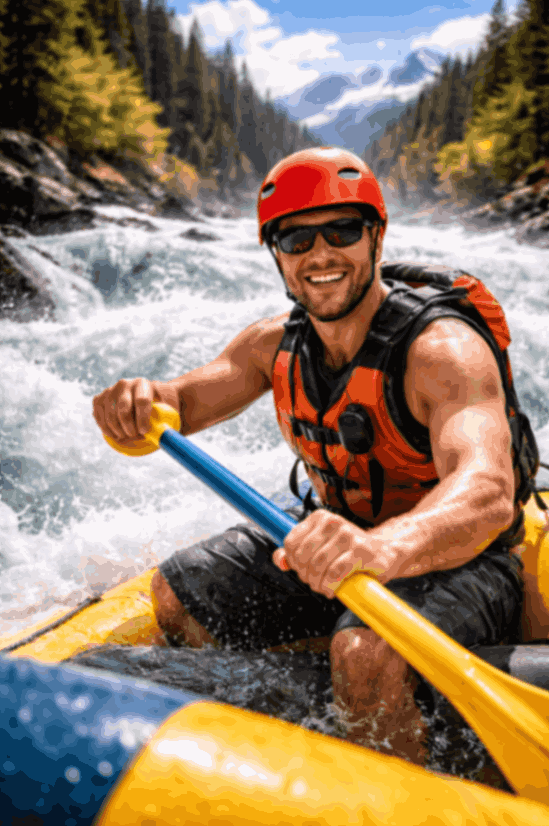
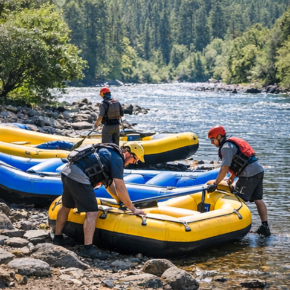

White Knuckle Rapids

White Knuckle Rapids is all about that moment when the water gets loud, your grip tightens, and you realize this is going to be a wild ride. We’re here for the adrenaline, the teamwork, the laughs between rapids, and the stories you’ll still be telling long after you’re dry. We run hard, respect the river, and make sure every trip delivers the kind of thrill that keeps you coming back for more. Grip tight. Ride harder.
History
Founded in 2005 by a group of adventure enthusiasts, White Knuckle Rapids started with a simple mission: to provide unforgettable white water rafting experiences. Over the years, we’ve grown from a small local outfit to a renowned rafting company known for our expert guides, top-notch equipment, and commitment to safety.

Our passion for the river and dedication to our customers have made us a favorite among thrill-seekers and nature lovers alike. Whether you want a mellow float or a heart-pounding run, our guides help you feel prepared, safe, and ready to have an amazing time.
Adventure Awaits You!